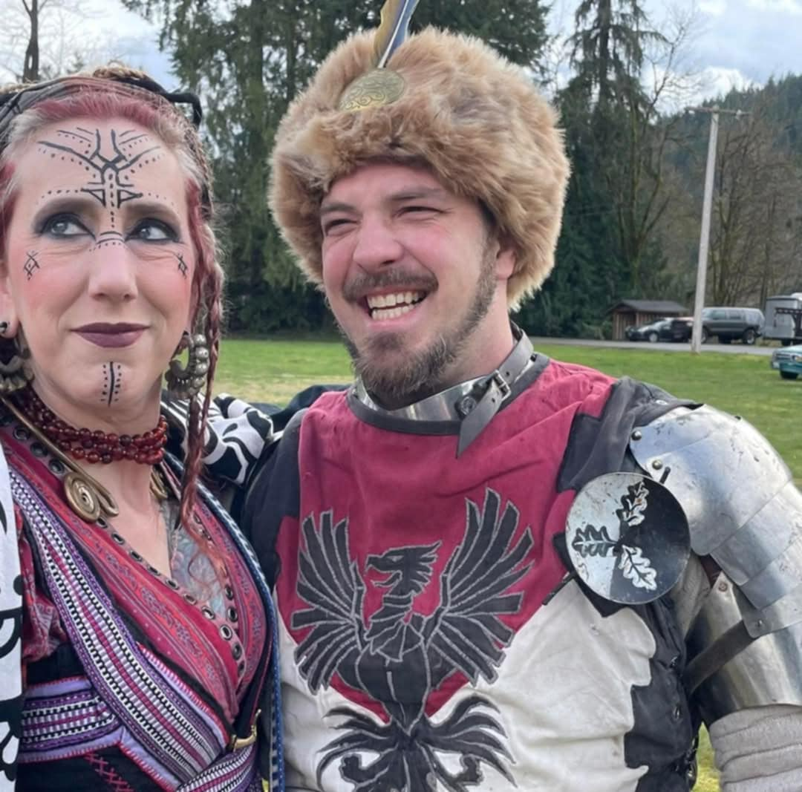
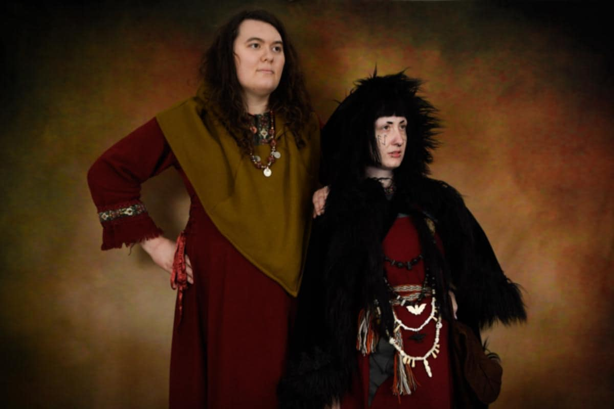

Event Report: Al-Madeena Hafla 2025
Every year, as the warmth of Spring spreads upon the land and begins its final assault on the dark forces of winter, and life springs forth again, the populace of Al-Madeena gathers for a day of revelry. This year, as always, our people celebrated the wellspring of new life. We danced. Our children hunted for eggs to bestow mighty powers upon their chosen warriors before battle began. Well crafted, handmade items were auctioned to overflow the coffers of our County, and desserts were dashed after.
King of the Eggheads Tournament
Many warriors gathered in the woods to allow new life to spring forth, cracking eggs affixed their worthy opponents' helms. Many bravely fought, but alas, at the end only Master Squire Therin and Sir Bromis stood with unbroken shells upon their heads. And Therin emerged victorious. All Hail Therin, King of the Eggheads!
Awards
Our Countess, in her infintie wisdom, bestowed upon Sir Derek, Knight of the Pheonix, and her "big little brother", an honor recognizing his efforts and support in running events and practices. Let be known that the noble knight has added the Silver Crescent to his treasure trove of accolades.

Also in her wisdom, and with the support of King Richard and Queen Consort Starr, our Countess bestowed upon a relative newcomer to our lands, an award of the Tyros Lumen. Though she has not walked long among us, in that short time, she has proven herself a steadfast supporter of the County's endeavors, always available to help ensure that events run smoothly, and is an absoluute joy to be around. Let it me known that Jane Morgan has been so honored!

And finally, our Countess Dagni made the most important announcement of all... her statement making claim to the Crown of Ardesca! Her words are reproduced below for all to see. May we marshall her mighty forces for the struggle ahead!
Let it be known, from the sunlit towers of Al-Madeena to the furthest reaches of our sundered land, that I, Countess Dagni Flokidottir, do hereby lay claim to the Crown of Ardesca. Once our Kingdom soared far and wide, untethered by the boundaries of man. With the coming of a great populace, were the visions of youthful freedoms grown past. So it was that as the phoenix last rose from the ashes, giving birth to our sister kingdom, Ardesca yet again takes flight, slender and swift. Reborn into youth. But I shall not rule so lean a kingdom. The time has come for us to swell our ranks with the plumes of prosperity. Let those who seek strength and prosperity stand with me and let those who would resist tremble before the march of destiny. Those who would stand with me rally to my banner and those who would oppose me take heed—for the tides of fate care not for the meek. By steel and by wisdom, by right and by might, shall I claim the throne on the fields of Crown War. Bear witness and heed my words.
Countess Dagni Flokidottir of Al-Madeena